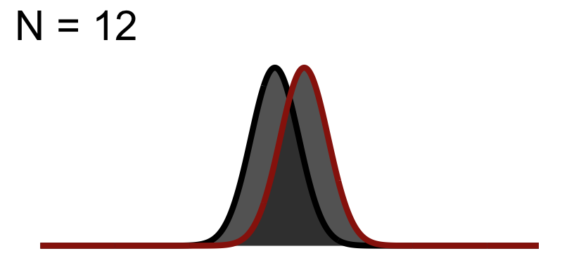

pacman::p_load(tidyverse, cowplot, glue) # for gluing strings of text together
Both power and effect size are defined as related to estimates of \(\mu\) & \(\sigma\)—means and standard deviation units. However, as we saw two weeks ago with our t-test, significance is evaluated in terms of standard error units. As we’ve often noted and reiterated above standard error is influenced by the size of your sample. In comparison, for any given sample the mean and standard deviation that you observe are entirely by chance. Simply put, the values that we use to estimate effect size are independent of the values that we use to test for significance. This is why even though an effect might be statistically significant, it may not be meaningfully / clinically significant. We may have over-amplified a relatively weak original signal by over-powering our study (e.g., getting way more participants than necessary).
Let’s look at an example assuming a medium effect size. Imagine this is whats going on at the level of the population.
Warning: Using `size` aesthetic for lines was deprecated in ggplot2 3.4.0.
ℹ Please use `linewidth` instead.
Now imagine going out an collecting data from this population given samples of different sizes. Note that the width of the curves here capture standard error.
What do you notice about the figures below?
Significance Test when N = 12

Significance Test when N = 24
Significance Test when N = 48
You will notice the area of \(1-\beta\) increases because as we add to the sample size, the curve (noise) gets thinner (SEM), but the distance between them does not change! This effect size is theoretically independent of significance testing as its simply based on the mean difference / standard deviation. If you know the true standard deviation (\(\sigma\)) then this is a true statement. However, we never know the true standard deviation so we approximate it based on sample. So our observed estimate of effect size from experimental data is another guess based on the variation due to chance. Because of this we cannot tie effect size to p-value.
To demonstrate this, let’s revisit the Hand et al data this time reducing the size of the effect. Again regarding Hand:
Hand, et al., 1994, reported on family therapy as a treatment for anorexia. There were 17 girls in this experiment, and they were weighed before and after treatment. The weights of the girls, in pounds, is provided in the data below:
Rows: 17 Columns: 3
── Column specification ────────────────────────────────────────────────────────
Delimiter: "\t"
chr (1): ID
dbl (2): Before, After
ℹ Use `spec()` to retrieve the full column specification for this data.
ℹ Specify the column types or set `show_col_types = FALSE` to quiet this message.
# reducing the effect (minimizing difference)anorexia_data <- anorexia_data %>%mutate(After = After -6) # putting in long formatanorexia_data <-pivot_longer(data = anorexia_data,cols =c(Before,After),names_to ="Treatment",values_to ="Weight")
So what is known: we have 17 total participants from (hypothetically) the same population that are measured twice (once Before treatment, and once After treatment). Based upon the experimental question we need to run a paired-sample (matched-sample) test.
Paired t-test
data: Weight by Treatment
t = 0.72773, df = 16, p-value = 0.4773
alternative hypothesis: true mean difference is not equal to 0
95 percent confidence interval:
-2.419429 4.948840
sample estimates:
mean difference
1.264706
Paired t-test
data: Weight by Treatment
t = 2.3651, df = 169, p-value = 0.01916
alternative hypothesis: true mean difference is not equal to 0
95 percent confidence interval:
0.2090925 2.3203193
sample estimates:
mean difference
1.264706
Cohen's d | 95% CI
-------------------------
0.18 | [-0.31, 0.65]
We see our effect size remains unchanged, but now our test is significant!
Source Code
---title: 'Power, Effect sizes, and Significance testing'---```{r}pacman::p_load(tidyverse, cowplot, glue) # for gluing strings of text together```Both power and effect size are defined as related to estimates of $\mu$ & $\sigma$---means and standard deviation units. However, as we saw two weeks ago with our t-test, significance is evaluated in terms of *standard error* units. As we've often noted and reiterated above *standard error* is influenced by the size of your sample. In comparison, for any given sample the mean and standard deviation that you observe are entirely by chance. Simply put, the values that we use to estimate effect size are independent of the values that we use to test for significance. This is why even though an effect might be statistically significant, it may not be meaningfully / clinically significant. We may have over-amplified a relatively weak original signal by over-powering our study (e.g., getting way more participants than necessary).Let's look at an example assuming a medium effect size. Imagine this is whats going on at the level of the population.```{r, echo=FALSE, fig.width=4.25,fig.height=2.0}# modified from http://rpsychologist.com/creating-a-typical-textbook-illustration-of-statistical-power-using-either-ggplot-or-base-graphicslibrary(ggplot2)library(grid) # need for arrow()m1 <-0# mu H0sd1 <-1# sigma H0m2 <- .5# mu HAsd2 <-1# sigma HAz_crit <-qnorm(1-(0.05/2), m1, sd1)# set length of tailsmin1 <- m1-sd1*4max1 <- m1+sd1*4min2 <- m2-sd2*4max2 <- m2+sd2*4# create x sequencex <-seq(min(min1,min2), max(max1, max2), .01)# generate normal dist #1y1 <-dnorm(x, m1, sd1)# put in data framedf1 <-data.frame("x"= x, "y"= y1)# generate normal dist #2y2 <-dnorm(x, m2, sd2)# put in data framedf2 <-data.frame("x"= x, "y"= y2)# combine polygons. df1$id <-2df2$id <-1poly <-rbind(df1, df2)poly$id <-factor(poly$id, labels=c("h0","h1"))ggplot(poly, aes(x,y, group=id)) +geom_polygon(show.legend=F, alpha=I(8/10)) +geom_line(data=df1, aes(x,y, color="H0", group=NULL, fill=NULL), size=1.5, show.legend=F) +geom_line(data=df2, aes(color="HA", group=NULL, fill=NULL),size=1.5, show.legend=F) +scale_color_manual("Group", values=c("HA"="#981e0b","H0"="black")) +ggtitle("Medium Effect") +theme(panel.grid.minor =element_blank(),panel.grid.major =element_blank(),panel.background =element_blank(),plot.background =element_rect(fill="#ffffff"),panel.border =element_blank(),axis.line =element_blank(),axis.text.x =element_blank(),axis.text.y =element_blank(),axis.ticks =element_blank(),axis.title.x =element_blank(),axis.title.y =element_blank(),plot.title =element_text(size=22))```Now imagine going out an collecting data from this population given samples of different sizes. Note that the width of the curves here capture standard error.What do you notice about the figures below?## Significance Test when N = 12```{r, echo=FALSE, fig.width=4.25,fig.height=2.0}# modified from http://rpsychologist.com/creating-a-typical-textbook-illustration-of-statistical-power-using-either-ggplot-or-base-graphicslibrary(ggplot2)library(grid) # need for arrow()m1 <-0# mu H0sd1 <-1# sigma H0m2 <- .5# mu HAsd2 <-1# sigma HAz_crit <-qnorm(1-(0.05/2), m1, sd1)# set length of tailsmin1 <- m1-sd1*4max1 <- m1+sd1*4min2 <- m2-sd2*4max2 <- m2+sd2*4# create x sequencex <-seq(min(min1,min2), max(max1, max2), .01)# generate normal dist #1y1 <-dnorm(x, m1, sd1/6^.5)# put in data framedf1 <-data.frame("x"= x, "y"= y1)# generate normal dist #2y2 <-dnorm(x, m2, sd2/6^.5)# put in data framedf2 <-data.frame("x"= x, "y"= y2)# combine polygons. df1$id <-2df2$id <-1poly <-rbind(df1, df2)poly$id <-factor(poly$id, labels=c("h0","h1"))ggplot(poly, aes(x,y, group=id)) +geom_polygon(show.legend=F, alpha=I(8/10)) +geom_line(data=df1, aes(x,y, color="H0", group=NULL, fill=NULL), size=1.5, show.legend=F) +geom_line(data=df2, aes(color="HA", group=NULL, fill=NULL),size=1.5, show.legend=F) +scale_color_manual("Group", values=c("HA"="#981e0b","H0"="black")) +ggtitle("N = 12") +theme(panel.grid.minor =element_blank(),panel.grid.major =element_blank(),panel.background =element_blank(),plot.background =element_rect(fill="#ffffff"),panel.border =element_blank(),axis.line =element_blank(),axis.text.x =element_blank(),axis.text.y =element_blank(),axis.ticks =element_blank(),axis.title.x =element_blank(),axis.title.y =element_blank(),plot.title =element_text(size=22))```## Significance Test when N = 24```{r, echo=FALSE, fig.width=4.25,fig.height=2.0}# modified from http://rpsychologist.com/creating-a-typical-textbook-illustration-of-statistical-power-using-either-ggplot-or-base-graphicslibrary(ggplot2)library(grid) # need for arrow()m1 <-0# mu H0sd1 <-1# sigma H0m2 <- .5# mu HAsd2 <-1# sigma HAz_crit <-qnorm(1-(0.05/2), m1, sd1)# set length of tailsmin1 <- m1-sd1*4max1 <- m1+sd1*4min2 <- m2-sd2*4max2 <- m2+sd2*4# create x sequencex <-seq(min(min1,min2), max(max1, max2), .01)# generate normal dist #1y1 <-dnorm(x, m1, sd1/12^.5)# put in data framedf1 <-data.frame("x"= x, "y"= y1)# generate normal dist #2y2 <-dnorm(x, m2, sd2/12^.5)# put in data framedf2 <-data.frame("x"= x, "y"= y2)# combine polygons. df1$id <-2df2$id <-1poly <-rbind(df1, df2)poly$id <-factor(poly$id, labels=c("h0","h1"))ggplot(poly, aes(x,y, group=id)) +geom_polygon(show.legend=F, alpha=I(8/10)) +geom_line(data=df1, aes(x,y, color="H0", group=NULL, fill=NULL), size=1.5, show.legend=F) +geom_line(data=df2, aes(color="HA", group=NULL, fill=NULL),size=1.5, show.legend=F) +scale_color_manual("Group", values=c("HA"="#981e0b","H0"="black")) +ggtitle("N = 24") +theme(panel.grid.minor =element_blank(),panel.grid.major =element_blank(),panel.background =element_blank(),plot.background =element_rect(fill="#ffffff"),panel.border =element_blank(),axis.line =element_blank(),axis.text.x =element_blank(),axis.text.y =element_blank(),axis.ticks =element_blank(),axis.title.x =element_blank(),axis.title.y =element_blank(),plot.title =element_text(size=22))```## Significance Test when N = 48```{r, echo=FALSE, fig.width=4.25,fig.height=2.0}# modified from http://rpsychologist.com/creating-a-typical-textbook-illustration-of-statistical-power-using-either-ggplot-or-base-graphicslibrary(ggplot2)library(grid) # need for arrow()m1 <-0# mu H0sd1 <-1# sigma H0m2 <- .5# mu HAsd2 <-1# sigma HAz_crit <-qnorm(1-(0.05/2), m1, sd1)# set length of tailsmin1 <- m1-sd1*4max1 <- m1+sd1*4min2 <- m2-sd2*4max2 <- m2+sd2*4# create x sequencex <-seq(min(min1,min2), max(max1, max2), .01)# generate normal dist #1y1 <-dnorm(x, m1, sd1/24^.5)# put in data framedf1 <-data.frame("x"= x, "y"= y1)# generate normal dist #2y2 <-dnorm(x, m2, sd2/24^.5)# put in data framedf2 <-data.frame("x"= x, "y"= y2)# combine polygons. df1$id <-2df2$id <-1poly <-rbind(df1, df2)poly$id <-factor(poly$id, labels=c("h0","h1"))ggplot(poly, aes(x,y, group=id)) +geom_polygon(show.legend=F, alpha=I(8/10)) +geom_line(data=df1, aes(x,y, color="H0", group=NULL, fill=NULL), size=1.5, show.legend=F) +geom_line(data=df2, aes(color="HA", group=NULL, fill=NULL),size=1.5, show.legend=F) +scale_color_manual("Group", values=c("HA"="#981e0b","H0"="black")) +ggtitle("N = 48") +theme(panel.grid.minor =element_blank(),panel.grid.major =element_blank(),panel.background =element_blank(),plot.background =element_rect(fill="#ffffff"),panel.border =element_blank(),axis.line =element_blank(),axis.text.x =element_blank(),axis.text.y =element_blank(),axis.ticks =element_blank(),axis.title.x =element_blank(),axis.title.y =element_blank(),plot.title =element_text(size=22))```You will notice the area of $1-\beta$ increases because as we add to the sample size, the curve (noise) gets thinner (SEM), but the distance between them does not change! This effect size is theoretically independent of significance testing as its simply based on the mean difference / standard deviation. If you know the true standard deviation ($\sigma$) then this is a true statement. **However, we never know the true standard deviation so we approximate it based on sample**. So our observed estimate of effect size from experimental data is another guess based on the variation due to chance. Because of this we cannot tie effect size to p-value.To demonstrate this, let's revisit the Hand et al data this time reducing the size of the effect. Again regarding Hand:> Hand, et al., 1994, reported on family therapy as a treatment for anorexia. There were 17 girls in this experiment, and they were weighed before and after treatment. The weights of the girls, in pounds, is provided in the data below:```{r}anorexia_data <-read_delim("https://www.uvm.edu/~statdhtx/methods8/DataFiles/Tab7-3.dat", "\t", escape_double =FALSE, trim_ws =TRUE)# reducing the effect (minimizing difference)anorexia_data <- anorexia_data %>%mutate(After = After -6) # putting in long formatanorexia_data <-pivot_longer(data = anorexia_data,cols =c(Before,After),names_to ="Treatment",values_to ="Weight")```So what is known: we have 17 total participants from (hypothetically) the same population that are measured twice (once `Before` treatment, and once `After` treatment). Based upon the experimental question we need to run a paired-sample (matched-sample) test.```{r}t.test(Weight~Treatment, data=anorexia_data, paired=T)pacman::p_load(effectsize)effectsize::cohens_d(Weight~Treatment, data=anorexia_data, paired = T,correction = T)```So on first pass we've got a null effect ($p>.05$) and our effect size is small (0.16). Let's image that instead of 17 participants we had 170:```{r}anorexia_data_170 <-do.call("rbind", replicate(10, anorexia_data, simplify =FALSE))``````{r}t.test(Weight~Treatment, data=anorexia_data_170, paired=T)pacman::p_load(effectsize)effectsize::cohens_d(Weight~Treatment, data=anorexia_data, paired = T,correction = T)```We see our effect size remains unchanged, but now our test is significant!